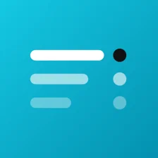

降りる駅を、
1分前に知らせる。
スマホに集中していても、乗り過ごさない。
App Store で入手（無料）使い方
- 電車に乗ったら、降りる駅に着く時刻を「+10分」などで入れ、ラベルに「降りる」と入力
- 「1分前」を選んで「追加する」をタップ
- 着く1分前に「降りる まであと1分です」と通知
Timemarkが便利な理由
降りる直前の「1分前」に通知
降りる準備にちょうどよい、着く1分前に知らせます。
Timemark Plusほかのアプリを使っていても見える
降りるまでの残り時間を、ロック画面とダイナミックアイランドに表示します。
Timemark Plusマナーモードでも気づける
メッセージの通知と区別できるよう、通知を連続で鳴らします（1〜5回、設定で変更可）。
よくある質問
1分前の通知は無料で使えますか？
事前通知（10分前・5分前・1分前）は、買い切りのTimemark Plusで使えます。着く時刻の通知は無料で使えます。
寝過ごしの防止にも使えますか？
使えます。降りる駅に着く少し前の時刻を入れておくと、その時刻に通知します。
乗換案内のアプリと何が違いますか？
Timemarkは時刻表を調べるアプリではなく、調べた到着時刻を通知するアプリです。乗換案内で見た到着時刻を入れて使います。